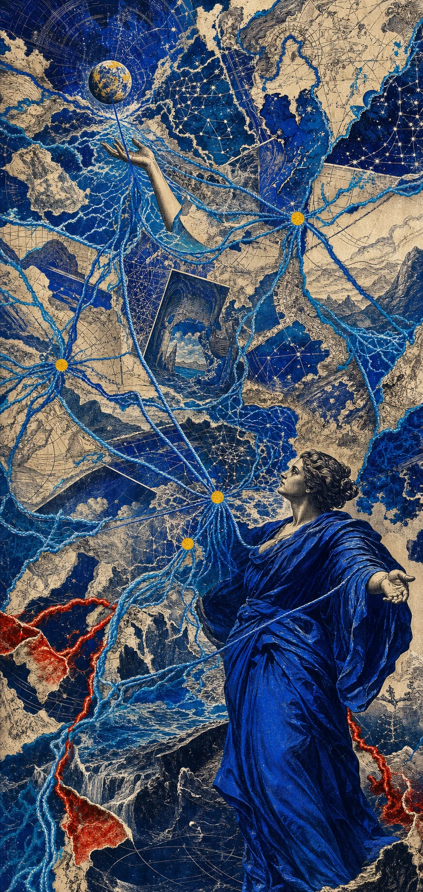

Atelier
Lumina
Lumina
Étude de mouvement · prototype isolé
Démonstration — astre vivant
La matière respire.
Une seule partie de l’image s’anime : l’astre tourne lentement sur lui-même, pendant que les anneaux maintiennent une tension orbitale discrète. La figure reste immobile.
Aucun asset Hermès copié · principe abstrait réinterprété
